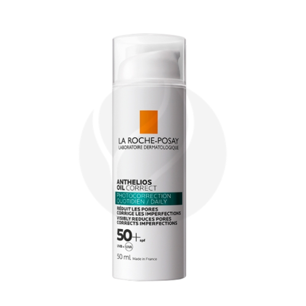
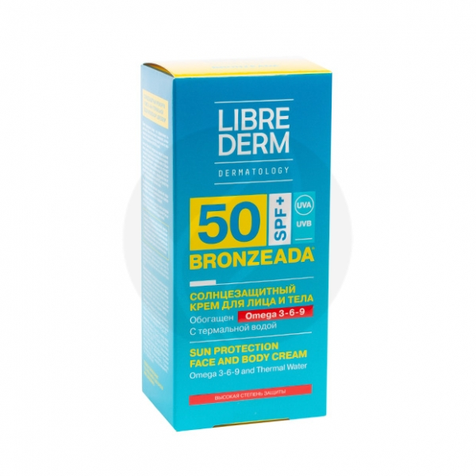

| 1880 |
AQUA/WATER/EAU, SILICA, ISOPROPYL PALMITATE, BIS-ETHYLHEXYLOXYPHENOL METHOXYPHENYL TRIAZINE, ETHYLHEXYL SALICYLATE, ETHYLHEXYL TRIAZONE, BUTYL METHOXYDIBENZOYLMETHANE, DICAPRYLYL ETHER, NIACINAMIDE, DROMETRIZOLE TRISILOXANE, PHENYLBENZIMIDAZOLE SULFONIC ACID, DIISOPROPYL ADIPATE, TRIETHANOLAMINE, GLYCERIN, ZEA MAYS STARCH / CORN STARCH, DIISOPROPYL SEBACATE, DIETHYLAMINO HYDROXYBENZOYL HEXYL BENZOATE, PENTYLENE GLYCOL, TOCOPHEROL, SODIUM STEAROYL GLUTAMATE, PERLITE, ACRYLATES/C10-30 ALKYL ACRYLATE CROSSPOLYMER, CAPRYLYL GLYCOL, CI 15510 / ORANGE 4, CI 16035 / RED 40, INULIN LAURYL CARBAMATE, ISOPROPYL LAUROYL SARCOSINATE, P-ANISIC ACID, SALICYLIC ACID, SILICA SILYLATE, SODIUM POLYACRYLATE, TEREPHTHALYLIDENE DICAMPHOR SULFONIC ACID, TITANIUM DIOXIDE, TRISODIUM ETHYLENEDIAMINE DISUCCINATE, TROMETHAMINE, XANTHAN GUM, ZINC PCA, PARFUM / FRAGRANCE
|
La Roche-Posay Anthelios Солнцезащитный крем для жирной кожи SPF 50+, 50мл |
 |
| 1786 |
Aqua (Water), C12-15 Alkyl Benzoate, Octocrylene, Diethylamino Hydroxybenzoyl Hexyl Benzoate, Glycerin, Butyl Methoxydibenzoylmethane, Phenylbenzimidazole Sulfonic Acid, Cetearyl Alcohol, Ethylhexyl Methoxycinnamate, Peg-100 Stearate, Glyceryl Stearate, Hydrogenated Dimer Dilinoleyl/Dimethylcarbonate Copolymer, Ethylhexyl Triazone, Potassium Cetyl Phosphate, Aluminum Starch Octenylsuccinate, Dimethicone, Aqua (Water (Thermal Water)), Bisabolol, Hamamelis Virginiana Leaf Extract (Hamamelis Virginiana (Witch Hazel) Leaf Extract), Vitis Vinifera Seed Oil (Vitis Vinifera (Grape) Seed Oil), Linum Usitatissimum Seed Oil (Linum Usitatissimum (Linseed) Seed Oil), Borago Officinalis Seed Oil, Zinc Oxide (Ci 77947), Titanium Dioxide, Alumina, Manganese Chloride, Ferric Chloride, Cupric Chloride, Magnesium Chloride, Calcium Chloride, Zinc Chloride, Hydrogenated Palm Glycerides, Sodium Hydroxide, Polyacrylate Crosspolymer-6, Xanthan Gum, Disodium Edta, T-Butyl Alcohol, Propylene Glycol, Pentylene Glycol, Caprylic/Capric Triglyceride, Polyhydroxystearic Acid, Triethoxycaprylylsilane, Stearic Acid, Ethylhexylglycerin, Parfum (Fragrance), Phenoxyethanol, Dehydroacetic Acid, Benzyl Alcohol, Alpha-Isomethyl Ionone, Geraniol, Eugenol.
|
Librederm Bronzeada Солнцезащитный крем SPF50 с Омега 3-6-9, 150мл |
 |